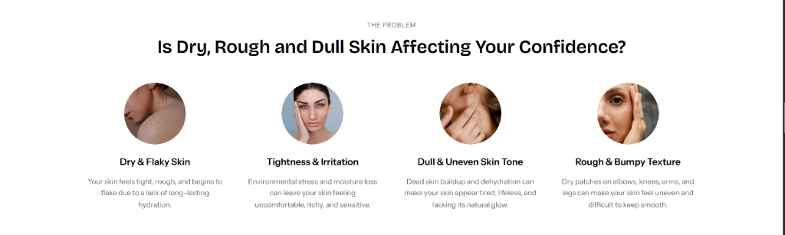
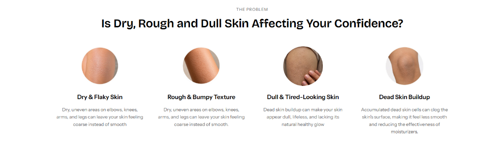
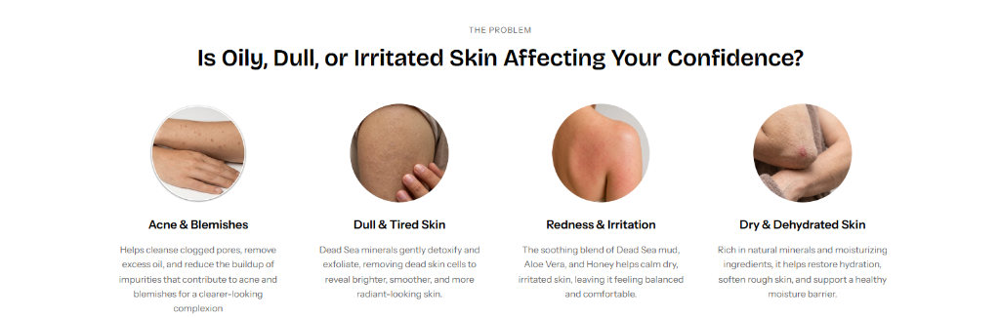

The Business Challenge: Skepticism at the Point of Purchase
Beresheet Dead Sea is an e‑commerce skincare brand formulating therapeutic products from the mineral-dense waters and mud of the Dead Sea.
When Beresheet Dead Sea approached our team, the client reported approximately five to six months without any sales. In the competitive skincare market, shoppers landing on the product pages encountered general descriptions of Dead Sea minerals without clear visual proof, trust signals, or noteworthy customer experiences.
The challenge: How might we improve the product detail page (PDP) experience so visitors can evaluate product results, connect benefits to their own skin concerns, and explore authentic customer content?
My Role vs. Team Scope
I operated as the UX & Product Designer within a collaborative engagement, partnering with the client and frontend developers to research, design, and implement targeted improvements on product pages.
Product UX & Visual Strategy
- Designed and shipped the interactive before-and-after comparison slider across product pages.
- Researched products with the client and wrote product-specific skincare concern sections.
- Proposed and designed the user-controlled customer UGC video gallery on relevant product pages.
- Structured visual hierarchy and copy to keep sections consistent with the storefront.
- Collaborated directly with developers to implement and verify the sections in production.
Platform, Marketing & Logistics
- E‑commerce store theme engineering and Shopify frontend implementation.
- Product formulation knowledge and existing customer UGC video assets.
- Checkout processing, order management, and inventory fulfillment.
- Promotional Meta Ads campaigns launched after product-page improvements.
Identifying Product-Page Gaps
Reviewing the existing product pages highlighted three opportunities to make product information clearer and more relevant for shoppers:
- Abstract Mineral Claims: General statements about Dead Sea minerals did not visually demonstrate before-and-after skincare results.
- Generic Storewide Copy: Product pages lacked tailored explanations connecting each specific product to the four skincare concerns it addressed.
- Unused Customer Content: Existing user-generated videos were not surfaced on the product pages where shoppers were evaluating a purchase.
Making Product Results Visible
To help customers evaluate product efficacy directly on the product detail page, I designed an interactive before-and-after comparison feature titled "Visible Results You Can See."
Visible Results You Can See
Reveal Softer, Healthier-Looking Skin
Turning Product Knowledge Into Relevant Experiences
Translating product research into skincare content tailored to each product.
Each Beresheet Dead Sea product serves different skincare needs. I introduced a dedicated section on the product pages to communicate those needs through relevant imagery, clear headings, and concise explanatory copy.
I researched the products and their origins, then discussed them with the client to better understand their intended uses and benefits. I translated those findings into product-specific messaging rather than repeating generic content across the store.
Each section presents four skincare concerns through a consistent visual structure. The layout remains familiar across product pages, while the content adapts to the product being presented.

The same pattern across other products
The structure stays consistent while the concerns, imagery, and copy change with the product.


- Research
- Researched the products and their origins.
- Client collaboration
- Discussed the products with the client to understand their properties, intended uses, and benefits.
- UX copywriting
- Wrote the headings and explanatory copy.
- Information architecture
- Structured the content into four blocks, each with circular imagery, a heading, and a short description.
- Visual design
- Designed the sections.
- Developer collaboration
- Worked with developers to implement the sections on the product pages.
Bringing Real Customer Experiences Into the Product Page
Making authentic customer videos accessible at the point of purchase.
The client already had user-generated videos featuring customers demonstrating or discussing their skincare products. I identified an opportunity to bring this content directly into the shopping experience, allowing visitors to explore real-life product content without leaving the product page.
I proposed and implemented a dedicated video section on the relevant product pages. Since UGC was not available for every product, the section appeared only where suitable videos existed.
The videos remained user-controlled, playing when clicked rather than automatically on page load.
Loved by Customers, Every Day
Nothing builds confidence like seeing a product in real life. Explore videos from our community showcasing the texture, application, and glowing results of Beresheet Papaya Body Butter in their everyday skincare routines.
Responsive Design & Interface Craft
To support shoppers browsing across both desktop and mobile devices, each product-page improvement was designed for responsive clarity and reliable performance:
- Touch-Friendly Interactions on Mobile: Designed the comparison slider and customer video carousel to support natural touch gestures without blocking vertical page scrolling.
- Structured Visual Hierarchy on Desktop: Presented comparison imagery, four-block skincare concern grids, and three-column video galleries with balanced whitespace and readable typography.
- Deferred Media Loading: Configured customer videos with user-initiated playback (`preload="none"`) so pages opened cleanly without autoplaying media.
From No Sales to the First Orders
An encouraging early outcome following the product-page improvements and promotional campaigns.
When Beresheet Dead Sea approached our team, the business had reportedly gone approximately five to six months without sales.
I contributed a series of product-page improvements focused on helping shoppers explore product benefits, understand relevant skincare concerns, and access authentic customer content.
After these improvements were completed, the client relaunched their promotional campaigns on Meta Ads and received two orders in the first week.
Recorded during the first week following the completion of product-page improvements and the launch of Meta Ads promotional campaigns.
Baseline context reported by the client when approaching our team, rather than independently verified analytics.
Yarden Jewelry
E‑commerce Brand Design →